| Configurations |
|
The linear gauge chart from FusionWidgets pack offers you a lot of configuration options. Here we'll learn:
Let's see each of them one by one. |
| Using palettes |
The linear gauge offers 5 pre-defined color palettes for you to choose from. Each of these palettes is accessible by the numbers 1-5 respectively. To choose a palette, all you need to do is set: |
|
Shown below are a few examples of palettes applied on our previous chart: |
| 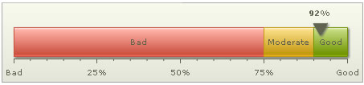 |
| Palette 2 applied |
| 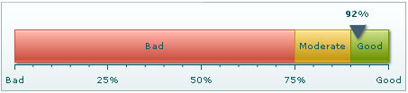 |
| Palette 3 applied |
| 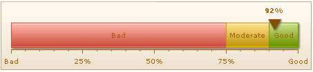 |
| Palette 4 applied |
Additionally, you can also define an entire new palette by setting a single theme color using: |
|
This will create a new palette derived from this color and then color the chart as under: |
| 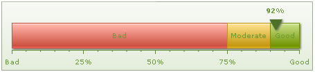 |
| Configuring pointer properties |
You can configure almost all properties of the gauge's pointer at both <chart> level and individual <pointer> level. When using multiple pointers on the chart, it's better to customize at the <pointer> level. To change the cosmetics of pointer, you can use: |
|
This will result in: |
| 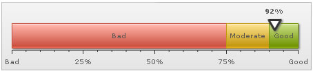 |
You can configure the radius and shape using: |
|
This will lead to: |
| 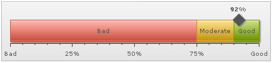 |
| Adding tool text and link to pointer |
You can add tool text and link to each pointer using: |
|
The link will need to be in FusionCharts link format. This will result in: |
| 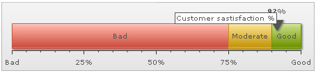 |
| Adding multiple pointers |
To add multiple pointers, you just need to add multiple <pointer> elements within <pointers> element as under: |
<pointers> <pointer value="92" toolText="Current year"/> <pointer value="79" bgColor="CCCCCC" borderColor="333333" toolText="Last year"/> </pointers> "pointers": {
"pointer": [
{
"value": "92",
"tooltext": "Current year"
},
{
"value": "79",
"bgcolor": "CCCCCC",
"bordercolor": "333333",
"tooltext": "Last year"
}
]
} |
Here, we've added two pointers - one indicating current year's value and the other previous year's value. You can provide custom cosmetics for each pointer. This chart results in: |
| 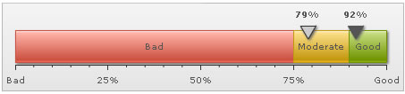 |
| Pointer value configurations |
You can opt to show/hide the value for each pointer on gauge using: |
|
This will result in: |
| 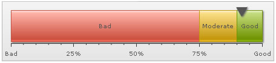 |
You can also opt to show the value above/below pointer using: |
|
This will result in: |
| 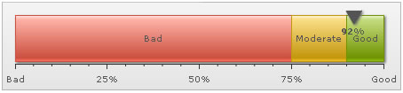 |
| Pointer position |
You can configure the pointer to show on top of scale or bottom using: |
|
This results in: |
| 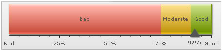 |
| Configuring gauge gradient mix |
FusionWidgets linear gauge allows you to configure the gradient fill mix of the gauge by specifying gradient fill formula as under: |
|
Here, we've specified the fill mix as gradient formula (explained in section Advanced charting > Using Gradients) and set the gaugeFillRatio attribute as empty (so as to instruct chart to automatically distribute the gradient color constituents). The color sequence starts applying from the bottom part to top part i.e., first color specified will be applied to the bottom side and then move out towards top side. The gauge will look as under: |
| 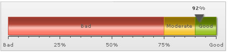 |
Another example: |
|
It results in: |
| 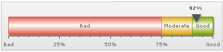 |
Another example: |
|
Resulting in: |
| 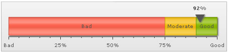 |
| Configuring gauge borders |
You can configure to show/hide the gauge border. Additionally, you can configure to show the entire border in single color or a color derived from the color range fill color. To hide the gauge border, you can set: |
|
This will result in (we've removed the shadow from this gauge to make the hidden border's effect more pronounced): |
| 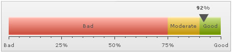 |
To set a single color as the border for entire gauge, you can set: |
|
This will result in: |
| 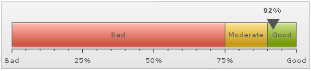 |
Or, you can also ask the chart to color each color scale's border in a derivative of its fill color using: |
|
Here, we've used one token of the gradient fill mix to color each color range using 30% darker color than its fill color. It will result in: |
As you can see above, each color range now bears a border color, which is 30% darker than its fill color. Or, if you want a 60% lighter fill shade, you could set: |
|
You can also set the border property for each color range individually by setting: |
|
This will result in: |
| Creating rounded gauge corners |
You can create gauges with rounded corners using: |
|
This will result in: |
| Hiding gauge labels |
You can opt not to show gauge labels in two ways:
This will result in: |
| 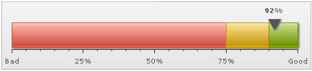 |
| Configuring gauge labels |
| You can use Styles to configure the font/effect for gauge labels. Shown below is an XML example: |
<styles> "styles": {
"definition": [
{
"type": "font",
"name": "labelFont",
"bgcolor": "FFFFFF",
"bordercolor": "999999"
}
],
"application": [
{
"toobject": "GAUGELABELS",
"styles": "labelFont,myShadow"
}
]
} |
This will result in: |
| 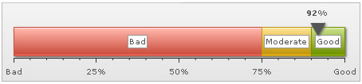 |